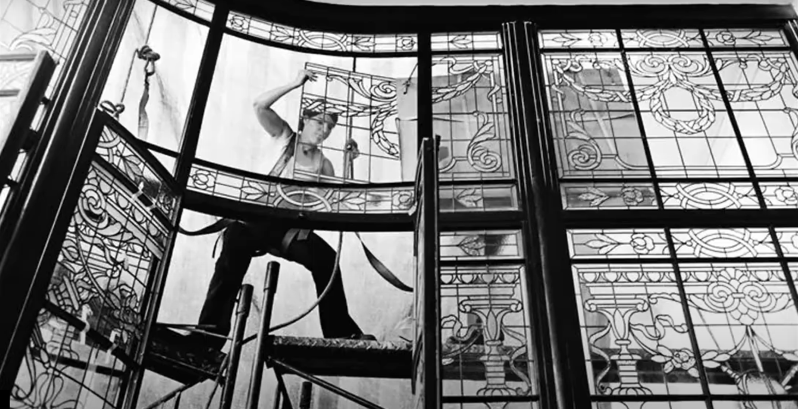
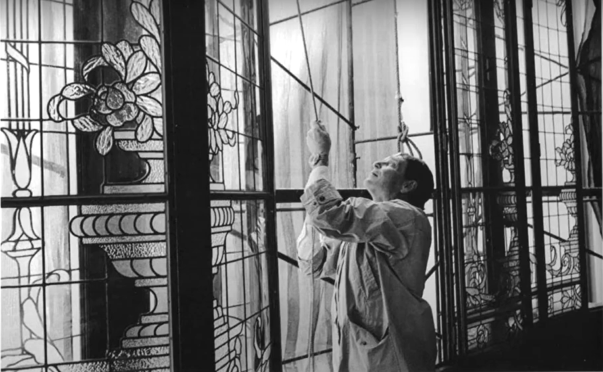

Trabajos


Detallamos acá un listado retrospectivo de trabajos realizados, tanto de vitrales nuevos como restauración de preexistentes. Son sólo algunos en el lapso de los últimos años, sobre un total de treinta en el oficio. Se trata de obras privadas y públicas, estas últimas de libre acceso.
- CÚPULA DEL PATIO DE HONOR DE LA SUPREMA CORTE DE JUSTICIA (Restauración)
- MUSEO DE LA CIUDAD DE SAN FERNANDO (Restauración)
- SANCOR COOPERATIVA DE SEGUROS LTDA. (Nuevo y Restauraciones)
- TENIS CLUB ARGENTINO (Nuevos y restauraciones)
- COLEGIO MILITAR DE LA NACIÓN (Restauración)
- RESIDENCIA PARTICULAR, Palermo (Nuevos)
- RESIDENCIA PARTICULAR, Flores (Nuevos)
- DE AYER Y DE SIEMPRE ARQUITECTURA ANTIGUA, Ituzaingó (Restauraciones)
- CAPILLA DE LA ASOCIACIÓN ESPAÑOLA DE SOCORROS MUTUOS, Chacarita (Restauración)
- RESIDENCIA PARTICULAR, Olavarría (Nuevos)
- LABORATORIOS RONTAG (Nuevos y Restaurados)
- CAPILLA LA SAGRADA FAMILIA CÍRCULO POLICIA FEDERAL (Nuevos)
- PALACIO RECONQUISTA (Nuevos y Restaurados)
- SALON DE EVENTOS BEL-SOF, Adrogué (Nuevos)
- INTERPOL – D.G.T.I.D.C. (Nuevos)
- RESIDENCIA PARTICULAR, Ezpeleta (Nuevos)
- ESTUDIO DE ARQUITECTURA, Villa Urquiza (Nuevos y Restauraciones)
- CONSORCIO, Recoleta (Restauraciones)
- RESIDENCIA PARTICULAR, Retiro (Nuevos)
- RESIDENCIA PARTICULAR, Maschwitz (Nuevos)
- RESIDENCIA PARTICULAR, Balvanera (Nuevos)
- RESIDENCIA PARTICULAR, Monserrat (Restauración)
- CONSORCIO, Recoleta (Restauraciones)
- RESIDENCIA PARTICULAR, Villa Crespo (Restauraciónes)
- CAPILLA DEL SAGRADO CORAZÓN, Prov. de Tucumán (Nuevos)
- AMERICAN TATTOO, Galería Bond Street (Nuevos)
- ESTUDIO DE ARQUITECTURA, Belgrano (Nuevos y Restauraciones)
- ESTUDIO DE ARQUITECTURA, Recoleta (Restauracion)
- NUEVAS CONSTRUCCIONES S.A. (Nuevos y restauraciones)
- CUMBRE COOPERATIVA H. ARGENTINA DE SEGUROS (Restauraciones)
- RESIDENCIA PARTICULAR, Balvanera (Restauración)
- RESIDENCIA PARTICULAR, Villa Crespo (Nuevo)
- RESIDENCIA PARTICULAR, Palermo (Restauración y nuevo)
- ARQUITECTOS DAVIES (Nuevos)
- RESIDENCIA PARTICULAR, Chacarita (Restauración)
- SUPERINTENDENCIA DE BOMBEROS (Nuevo)
- RESIDENCIA PARTICULAR, Belgrano (Restauración y nuevo)
- RESIDENCIA PARTICULAR, Velez Sarsfield (Nuevo)
- CO. VI. POL. (Nuevos y Restauraciones)
- RESIDENCIA PARTICULAR, Recoleta (Restauración)
- RESIDENCIA PARTICULAR, Palermo (Nuevo)
- ARQUITECTOS BASSO (Restauración)
- RESIDENCIA PARTICULAR, Ciudad de Santa Fe (Nuevos)
- RESIDENCIA PARTICULAR, Villa Crespo (Nuevo)
- HOTEL COPAHUE (Nuevos)
- CONSORCIO, San Nicolás (Restauración)
- ESTUDIO ROMANELLO Y ASOCIADOS (Nuevos)
- PROVINCIA DEL CHUBUT PREVISIÓN SOCIAL (Restauraciones)
- RESIDENCIA PARTICULAR, San Nicolás (Nuevo)
- RESIDENCIA PARTICULAR, Balvanera (Nuevo)
- RAIMENT S.A. (Restauraciones)
- RESIDENCIA PARTICULAR, Catleta Olivia, Santa Cruz (Nuevos)
- RANELAGH GOLF CLUB (Nuevo y Restauraciones)
- RESIDENCIA PARTICULAR, Almagro (Nuevos y Restauraciones)
- RESIDENCIA PARTICULAR, Recoleta (Nuevo y Restauración)
- ADMINISTRACIÓN MARTA MOLINA (Restauración)
- RESIDENCIA PARTICULAR, Coglhan (Nuevos)
- CONSORCIO, Caballito (Restauraciones)
- RESIDENCIA PARTICULAR, Caballito (Nuevo)
- RESIDENCIA PARTICULAR, Almagro (Nuevos)
- ESTUDIO, Caballito (Restauraciones)
- RESIDENCIA PARTICULAR, Nueva Pompeya (Nuevo)
- SPA NATURAL ORGÁNICO (Nuevos)
- CONSORCIO, Palermo (Restauración)
- RESIDENCIA PARTICULAR, Caballito (Restauraciones)
- CONSULTORIA PRIETO & ASOC. (Nuevos)
- RESIDENCIA PARTICULAR, Recoleta (Nuevos y Restauraciones)
- PRESIDENCIA DE LA NACIÓN (Restauración)
- COLEGIO DE SANTA TERESITA DEL NIÑO JESÚS (Restauración)
- RESIDENCIA PARTICULAR, Monserrat (Restauración)
- BANCO CENTRAL DE LA REPÚBLICA ARGENTINA (Nuevos)
- ORATORIO DE LA MISERICORDIA, Morón (Nuevo)
- CONSORCIO, Constitución (Restauraciones)
- RESIDENCIA PARTICULAR, Almagro (Restauración)
- CONGREGACIÓN DEL COLEGIO LA ANUNCIATA (Restauración)
- RESIDENCIA PARTICULAR, Boedo (Restauración)
- RESIDENCIA PARTICULAR, Parana, Entre Rios (Nuevo)
- RESIDENCIA PARTICULAR, Campo de Roca (Nuevos y Restauración)
- RESIDENCIA PARTICULAR, Almagro (Restauración)
- RESIDENCIA PARTICULAR, Parque Chacabuco (Nuevo y Restauración)
- CONSORCIO, Belgrano (Restauración)
- RESIDENCIA PARTICULAR, Balvanera (Nuevo)
- RESIDENCIA PARTICULAR, Barracas (Nuevo)
- RESIDENCIA PARTICULAR, Palermo (Nuevo)
- RESIDENCIA PARTICULAR, Nuñez (Restauración)
- RESIDENCIA PARTICULAR, Villa Urquiza (Restauración)
- CONSORCIO, Blavanera (Nuevo)
- ESTUDIO DE ARQUITECTURA, Villa Crespo (Nuevos)
- SONTEC S.A. - GOLDSTAR (Restauraciones)
- RESIDENCIA PARTICULAR, Monserrat (Nuevo)
- RESIDENCIA PARTICULAR, Ramos Mejía (Nuevos y restauraciones)
- RESIDENCIA PARTICULAR, Flores (Restauraciones)
- RESIDENCIA PARTICULAR, Quilmes (Nuevos)
- RESIDENCIA PARTICULAR, Hurlingham (Nuevo y Restauraciones)
- CONSORCIO, Recoleta (Restauración)
- RESIDENCIA PARTICULAR, Flores (Restauraciones)
- RESIDENCIA PARTICULAR, Caballito (Restauraciones)
- RESIDENCIA PARTICULAR, Almagro (Nuevo y Restauración)
- RESIDENCIA PARTICULAR, Retiro (Nuevo)
- RESIDENCIA PARTICULAR, Recoleta (Nuevos y Restauraciones)
- RESIDENCIA PARTICULAR, Barracas (Restauración)
- IGLESIA NTRA. SRA. DE LORETO, Ezeiza (Restauraciones)
- COLEGIO DE ESCRIBANOS, Recoleta (Restauraciones)
- COLEGIO DE LA MISERICORDIA, (Nuevos y restaurados)
- POLICÍA FEDERAL SUPER INTENDENCIA.DE ADMINISTRACIÓN (Nuevos y restaurados)
- ESTUDIO DE ARQUITECTURA, Boedo (Restauraciones)
- RESIDENCIA PARTICULAR, Martinez (Nuevo)
- RESIDENCIA PARTICULAR, Quilmes (Nuevos)
- CONSORCIO, Barracas (Nuevo)
- RESIDENCIA PARTICULAR, Parque Chacabuco (Nuevo y Restauraciones)